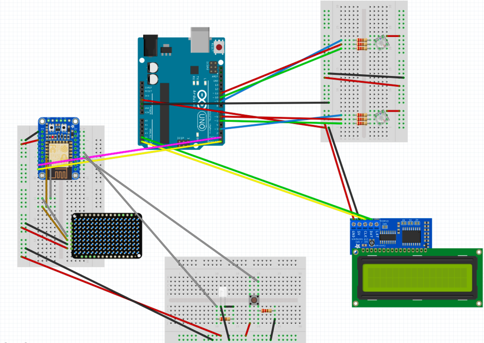
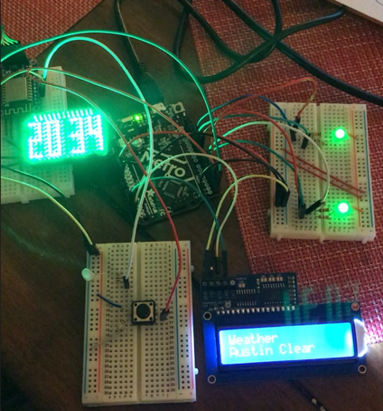

concept
A smart device that will show the temperature and time at a glance, so you spend more time unplugged in the morning.
It’s so easy to start your day attached to your phone. The goal of the honeycomb weather clock is to create a functional yet beautiful time piece that will help you get ready in the morning at a glance. This is great for anyone who wants to spend less time on their phone. It pulls in the current weather, temperature, and time for your current location. You can also select other cities you’re interested in (like a future travel spot or a city where a loved one lives) and see what the weather is like there.

technical implementation
01
Breaking down the idea
Interactions
Input
- Use the WiFi module (ESP8266 Huzzah) to pull in the time and temperature from the internet
- Use button to change the city that's pulled up on the screen
- The LED lights behind the bees will change color depending on the temperature outside, following the color system of blue for cooler temperatures, green for moderate temperatures, and red for hot temperatures.
- The time will be shown through the LED matrix
- The LED light next to the button will light to give feedback that the button has been pressed.
- The city and weather will be shown through the LCD screen
Challenges
There’s a lot of risks that I’m already perceiving from this project that aren’t even related to the coding and hardware portions. I have some experience with laser cutting and 3d printing and already expect to do some heavy troubleshooting. If those pieces become too much of a problem, I may have to resort to more functional elements. For the Arduino portion of my project, this will be my first attempt to attach Wi-Fi to it and I feel like I may run into some networking issues. If I’m not able to add the WiFi, then I may look at a non-RTC clock option to fake a part of the system. I may also change the scope, so it’s simplified and more focused on the LED.
02
software components
Through this project, I solidified my understanding of code enough to bring my idea to life. I learned how to:
- Use libraries
- Connect to Wifi and call for data by grabbing a string and parsing with JSON
- Serial to Serial Communication- send the data to a receiver (or in this case, the Arduino)
Full code with notes can be downloaded here.
References
03
hardware components
Implementation:
This prototype starts by connecting to WiFi and leveraging the Arduino Time Library and Timezone Library on the WiFi microcontroller (Huzzah 8266) to pull the Universal Coordinated Time and convert it to the local time. Once it converts it to a local time, each number is mapped to a set of bitmaps that activate a pattern of lights on an LED matrix. If the previous minute does not equal the current minute, it will move the minute and/or hour forward on the display accordingly.
When you press the button, it will turn an LED light on to let you know that you have pressed the button. Next, the Huzzah 8266 will send a request to the Open Weather API for a specific city and pulls the string weather data from the page. Then, it reads through the lines of the reply from the server and extracts the JSON string from it. Next, you parse the Json string to grab the current city, weather, and temperature. Since the temperature is in Kelvin, it is converted into Celsius and then into Fahrenheit. Both the current weather and temperature are printed to the serial monitor with clear start and end markers that will later be used by the Arduino. Then, the LED light turns off and the code moves it to the next city.
The Huzzah 8266 is connected through the serial ports to the Arduino. Through serial to serial communication, the Arduino receives the serial print string and uses the start and end marker to pull in the data that has been defined as important. Then, it parses the weather and temperature and saves them as two separate variables, so it can be used as two separate output signals.
The city and weather are printed to the LCD screen. The temperature data is sent through an if statement that determines what color the RGB LEDs should be. If it’s < 50 degrees Fahrenheit the light is blue. If it’s between 50-70 degrees Fahrenheit the light is green, and if it’s>50 degrees Fahrenheit the light is red. The color of the lights is set through the RGB color code.
kit design and execution
01
3D print bee and stand
I downloaded both the bee and the stand file from Thingiverse.
Print
When printing, make sure to stay with the print until the first layer has successfully printed.
3D Print Settings and Details:
- Infill: 40% (since I wanted it to be sturdier and have more heft)
- No supports needed for the stand since there was always a stable layer underneath each top layer. For the bee, I used PVA since it was water soluble
- Material: PLA and PVA
Remove excess plastic
Drop the bees in a cup of warm water and use something to swirl the prints around to help speed up the removal of the PVA supports. Otherwise, wait a few hours.
02
Laser cut
Before you go
To make sure everything fit, I first laser cut on cardboard before moving to wood. This also helped me realize that instead of doing dots, I should just cut out a rectangle around the clock to ensure the time would show through.
Prepare the file and materials
- Open the exported files in Adobe Illustrator including ferris wheel, stand, and booth sides from Rhino and the seat from Onshape (DXF file that can be opened in Illustrator)
- Make sure it's imported in at a 1:1 millimeter ratio
- Change stroke width to .001 pt. It will look barely visible on screen.
- Put each element on its own layer to make editing easier when you laser cut. Sometimes, certain lines won't cut as well if the wood used to laser cut isn't flat. Instead of recutting everything, this gives you the flexibility to only cut that one area instead of everything.
Set-up print settings and laser settings
For more details on how to do this, check out geometric lampshade write-up
Once the fit is established, lasercut on your actual material
Laser Cut Settings:
- Thin Cardboard: 20% speed, 100% power, 50% frequency
- Thick Cardboard: 10% speed, 100% power, 50% frequency
- Wood: 6% speed, 100% power, 50% frequency
03
Put everything together
Remember to wipe off the excess ash from the laser cutter before starting
I ended up cutting too large of a hold in the wood for the screens, so I tried to mask it with painter's tape knowing that I would paint over it. I also wanted to leverage this as a textural design element.
05
Finishing
Paint the clock and honeycomb overlay